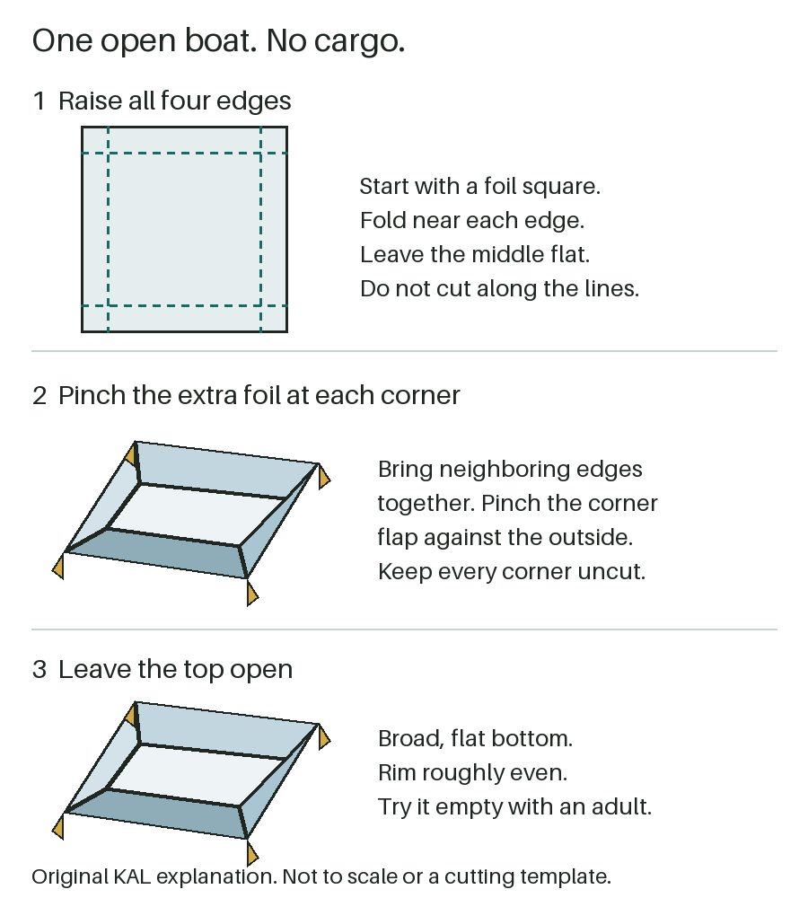

Foil + water | Adult-guided
Make a foil boat
Turn a flat sheet into an open boat. Will it float without touching the tray?
Research-backed; not family-tested by Kid Activity Lab.
Gather: one square of foil, a shallow tray, water and a towel. No coins, blocks or other cargo: this is an empty-boat start, not a load-carrying challenge.
Adult setup: put the tray on a stable, wipeable surface with the towel underneath. You control the water and stay beside the setup throughout. Even shallow water needs continuous adult supervision.
Shape it, then try it empty
- Raise the edges. Start with foil roughly 20 cm (8 inches) square. Fold all four edges upward about 2 cm (3/4 inch), leaving a broad, flat middle. These sizes are our starting suggestion, not a tested best fit.
- Pinch the corners. Bring neighboring raised edges together at each corner. Pinch the extra foil into a small flap against the outside. Do not cut the corners. Keep the top open and the rim roughly even.
- Adult places the empty boat. Add a shallow layer of water to the tray and lower the boat gently. Check that it can float clear of the bottom and sides, not sit on them. If you cannot check this in the shallow tray, stop; do not switch to a deeper vessel.
- Notice one thing. Say, "Does it stay upright, lean, or let water in?" Finish there, or ask the adult to lift it out before changing one side.
Stop and clear up if foil goes in a mouth, tears, water spills, the tray moves, attention lapses or the child wants to leave. The adult removes the boat, gathers the foil, empties and stores the tray, and wipes spills. Do this before leaving; an older child is not a substitute supervisor.

Boat not floating?
Resting on the tray? That is not a floating result. Stop this attempt if the boat cannot float freely in the shallow setup; choose a dry activity instead of adding depth.
Leaning or taking in water? The adult lifts it out, drains it over the tray and sets it on the towel. Look for a low rim, uneven bottom or tear. Gently flatten the bottom or raise one low edge. Replace torn foil or stop; pinching is not a guarantee against leaks.
Try the empty boat once more if you both want to, or finish. No cargo or sinking contest is needed.
Ways to take part
The adult can do the folding and all wet handling while the child chooses a side to change or watches. Use those roles for siblings too; stop if you cannot attend to everyone. If foil or water feels unwelcome, watch without touching or choose a dry paper-chain activity.
Age alone does not decide fit. Setup, play time, cleanup effort and individual handling ability have not been measured.
Sources and what we haven't tested
Science Buddies supports an open hull with a flat bottom and even rim. Discovery World distinguishes floating from resting on the container. DiscoverE suggests noticing leaning and leaks. Their cargo experiments are not this simpler empty-boat version.
CPSC water guidance calls for continuous supervision near water. No water depth makes this activity universally safe. Sources checked September 24, 2026; source guidance is not an endorsement of this adaptation.
Sizes, roles, diagram, rescue and limits here are KAL editorial choices. We have not physically or family-tested this version. Flotation, timing, enjoyment, learning, mess and safety outcomes remain unknown. Coins and assorted blocks are not established substitutes, so this version leaves cargo out.